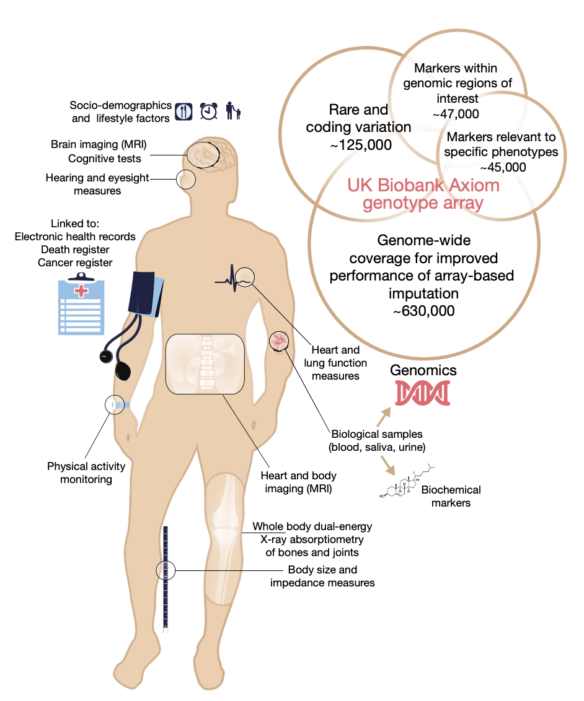
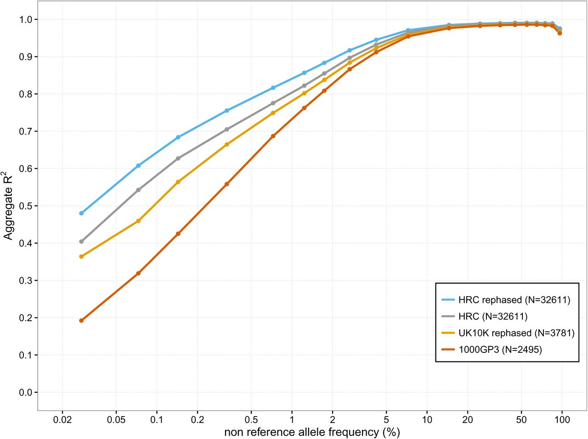
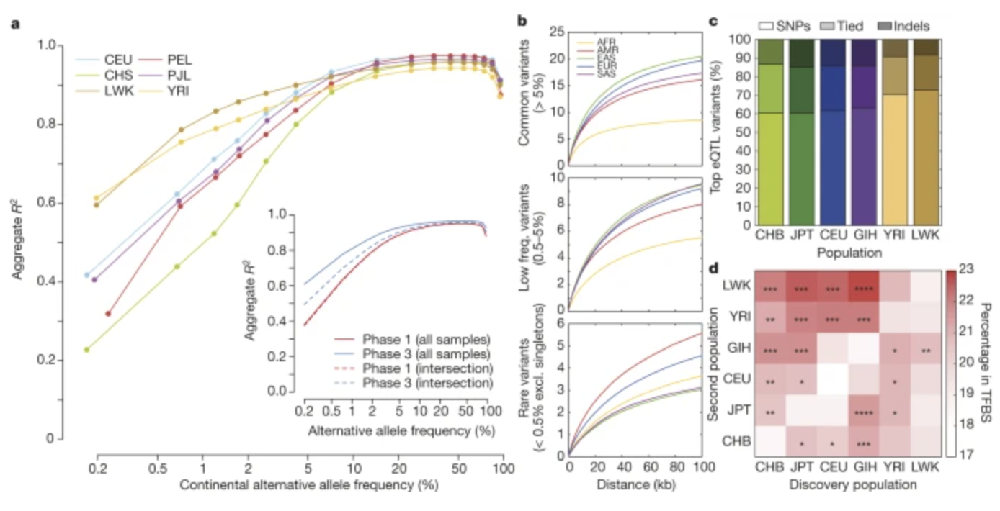
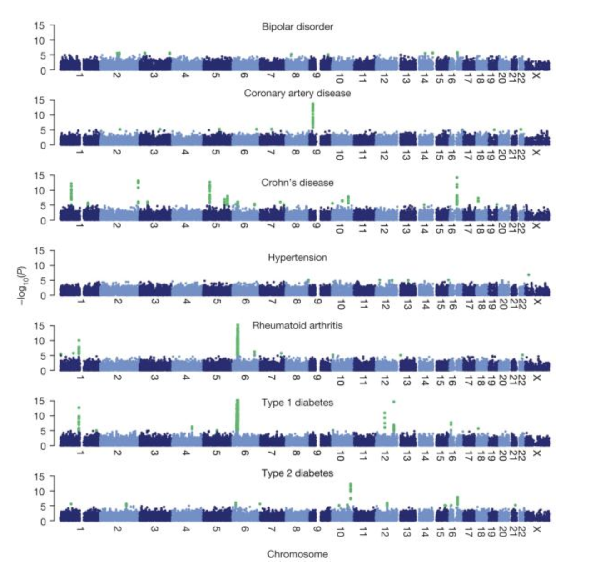
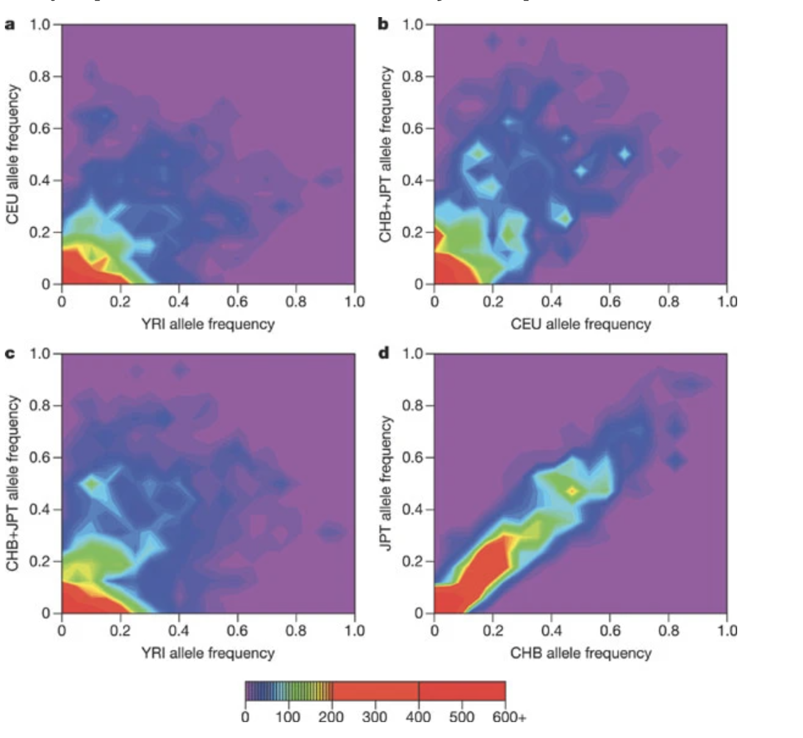

Projects
The group has been fortunate to be able to contribute to some of the most high-profile and impactful human genetics projects over the years. This page details some of that work.
Genomics England and the 100,000 Genomes Project
Genomics England (GEL) aims to enable faster, deeper genomic research, bringing genomic healthcare to all who need it. The GEL flagship project has sequenced 100,000 whole genomes from NHS patients with rare diseases, and their families, as well as patients with common cancers.
We were awarded a Wellcome Trust Collaborative Award to produce a set of derived data sets and analysis tools from the GEL genome sequences that will have high value for human genetics studies, including disease genetics studies both on the GEL subjects themselves and third party studies. This was joint work with Simon Myers and Garrett Hellenthal.
Specific aims include
-
Phase the genome sequences to generate the world’s largest haplotype reference panel, empowering very low frequency imputation for genome wide association studies.
-
Impute the UK Biobank dataset using the GEL reference panel, and provide the imputed data back to UK Biobank for use by approved researchers.
-
Use the phased genomes to characterize the fine genetic structure of the English population at an unprecedented level, providing knowledge for population structure matching and adjustment for disease studies.
UK Biobank
The UK Biobank is one of the largest bio-medical and research databases in the world, consisting of extensive data collected on 500,00 UK individuals. Our group played a central role in the production and analysis of the genome-wide genotyping array and imputed dataset.

This work was published in Nature
In addition we worked to analyze the brain MRI phenotypes produced by the project and this was also published in Nature
Haplotype Reference Consortium
The aim of the Haplotype Reference Consortium (HRC) was to create a large reference panel of human haplotypes by combining together sequencing data from multiple cohorts. From 2015 this resource has been used to impute many GWAS samples around the world. This has been greatly facilitated by imputation servers developed in Michigan, USA and Cambridge, UK. I co-led this project with Richard Durbin and Goncalo Abecasis.

CONVERGE
The China, Oxford and Virginia Commonwealth University Experimental Research on Genetic Epidemiology (CONVERGE) project on Major Depressive Disorder (MDD) sequenced 11,670 female Han Chinese at low-coverage (1.7X), providing the first large-scale whole genome sequencing resource representative of the largest ethnic group in the world. Samples are collected from 58 hospitals from 23 provinces around China.
Our group contributed to the project by working on genotype imputation from the low-coverage sequencing data and this resulted in a paper in Nature.
1000 Genomes Project
The 1000 Genomes Project was an international consortium that sought to characterize human genetic variation above 1% frequency using whole-genome sequencing.
Our group played a central role in many aspects of the analysis. The contribution was the development of fast and accurate methods for genotype estimation and phasing from the genotype likelihoods produced from the whole-genome sequencing. In addition, we developed high specialised methods that allowed us to infer genotypes and phase CNVs and other classes of structural variation.

The project lead to a number of high-profile publications
Wellcome Trust Case-Control Consortium
The Wellcome Trust Case-Control Consortium (WTCCC) was a UK consortium of researchers that carried out the first large-scale genome-wide association studies in the world. The dataset consisted of 4,000 cases of seven common diseases and 3,000 shared controls. A follow-on project analyzed common CNVs in the same set of samples.
Our group was centrally involved in the analysis and wrote much of the software used for the genotype calling (CHIAMO), quality control, genotype imputation (IMPUTE) and association analysis (SNPTEST). This was the first time genotype imputation was used in a genome-wide association study.

Publications from the project include
HapMap Project
The International HapMap Project was an organization that aimed to develop a haplotype map (HapMap) of the human genome, to describe the common patterns of human genetic variation. Our group contributed to the haplotype estimation for the project.
